Documento da rileggere in caso di dubbio. Le serie di potenze si agganciano a Taylor. Nota: nel sistema italiano sono spesso argomento di Analisi 2; nello scritto di Udine di Analisi 1 il peso può variare — verificare sulla scheda dell’anno.
1. Cos’è una serie di potenze
È un "polinomio infinito" nella variabile x:
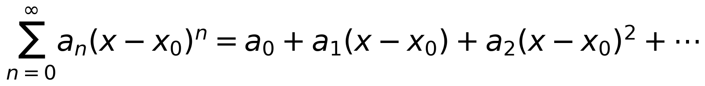
aₙ = coefficienti (numero davanti a xⁿ), x₀ = centro. Il valore della somma dipende da x. Legame con Taylor: una serie di Taylor è una serie di potenze con
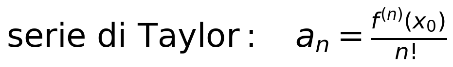
2. Convergenza: raggio e intervallo
Esiste un raggio R ≥ 0: la serie converge dentro l’intervallo centrato in x₀ e diverge fuori; i bordi vanno controllati a parte.
|x − x₀| < R → converge
|x − x₀| > R → diverge
|x − x₀| = R (bordi) → da controllare a parte
Tre casi: R = 0 (solo il centro), R = ∞ (ogni x reale), R finito.
3. La ricetta per il raggio
Criterio del rapporto sui coefficienti: dividi un coefficiente per il successivo e guarda il limite.
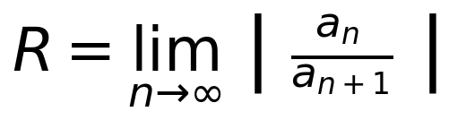
| Coefficienti aₙ | rapporto aₙ/aₙ₊₁ | Raggio |
|---|---|---|
| aₙ = 1/2ⁿ (1, 1/2, 1/4, …) | ognuno metà del prec. | R = 2 |
| aₙ = 1/3ⁿ (1, 1/3, 1/9, …) | ognuno un terzo | R = 3 |
| aₙ = 2ⁿ (1, 2, 4, 8, …) | ognuno il doppio | R = 1/2 |
| aₙ = 1/n (1, 1/2, 1/3, …) | (n+1)/n → 1 | R = 1 |
| aₙ = 1/n² (1, 1/4, 1/9, …) | [(n+1)/n]² → 1 | R = 1 |
4. Centro spostato: serie in (x − x₀)ⁿ
Se la serie è scritta con (x − x₀)ⁿ, cambia una cosa sola: l’intervallo non è più centrato in 0 ma in x₀. Il raggio R si calcola come sempre dai coefficienti; è solo il centro che si sposta.
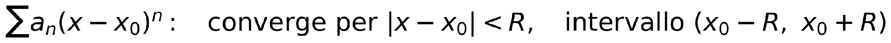
Il centro x₀ è il numero che azzera la parentesi: (x − 3) → x₀ = 3; (x + 2) → x₀ = −2 (attenzione al segno).
L’intervallo va da (x₀ − R) a (x₀ + R): stesso disegno di sempre, solo scivolato.
5. I bordi vanno controllati a parte
Sostituisci il valore di x nella serie: ottieni una serie numerica. Scrivi il passaggio per bene, raccogliendo sotto lo stesso esponente PRIMA di semplificare:
La domanda da fare SEMPRE per prima su ogni bordo: i termini tendono a 0? Se no → non converge (non serve altro). Se sì → usa armonica / serie p / Leibniz.
Diverge o indeterminata? (non sono la stessa cosa)
| Serie al bordo | Somme parziali | Esito |
|---|---|---|
| ∑ 1 = 1+1+1+… | somme: 1, 2, 3, 4, … salgono a +∞ | DIVERGE |
| ∑ (−1)ⁿ = 1−1+1−… | somme: 1, 0, 1, 0, … oscillano | INDETERMINATA |
In entrambi i casi la serie non converge (bordo escluso), ma il nome corretto è diverso: ∑ 1 diverge a +∞; ∑ (−1)ⁿ è indeterminata.
6. Strumenti per i bordi
Serie armonica
Il tranello classico: i termini tendono a 0, eppure diverge.
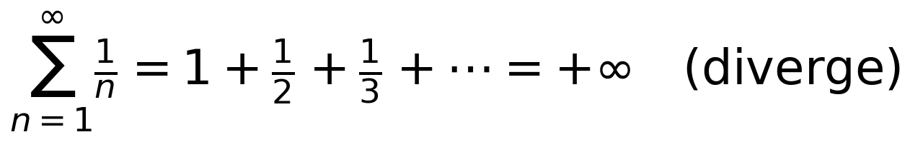
Regola d’oro: "i termini tendono a 0" è necessaria, non sufficiente.
Serie armonica generalizzata (serie p)
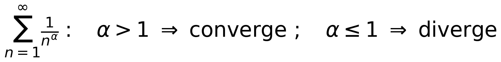
α = 1 → ∑ 1/n diverge; α = 2 → ∑ 1/n² converge.
Criterio di Leibniz (segni alterni)
Converge se i termini, in valore assoluto, tendono a 0 e sono decrescenti. Es.: ∑ (−1)ⁿ/n converge.
Convergenza assoluta
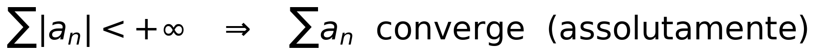
Se la serie "senza segni" converge (es. ∑ 1/n²), quella a segni alterni converge di sicuro.
7. Esercizi svolti completi
A — ∑ xⁿ / n (centro 0)
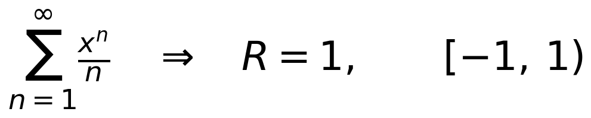
Bordo x = 1: ∑ 1/n armonica → diverge → escluso.
Bordo x = −1: ∑ (−1)ⁿ/n → converge (Leibniz) → incluso.
B — ∑ xⁿ / n² (centro 0)
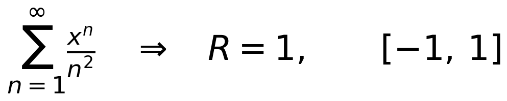
Bordo x = 1: ∑ 1/n² (α = 2) → converge → incluso.
Bordo x = −1: ∑ (−1)ⁿ/n² → converge (assoluta) → incluso.
C — ∑ (x − 2)ⁿ / n (centro spostato)
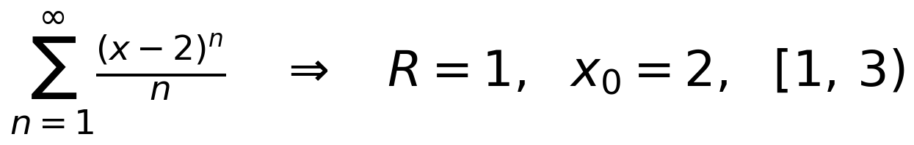
Centro x₀ = 2, R = 1 → intervallo aperto (1, 3).
Bordo x = 3: (3−2)=1 → ∑ 1/n armonica → diverge → escluso.
Bordo x = 1: (1−2)=−1 → ∑ (−1)ⁿ/n → converge (Leibniz) → incluso.
D — ∑ (x + 2)ⁿ / 3ⁿ (centro negativo)
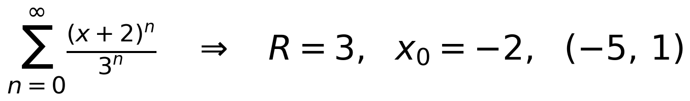
Centro x₀ = −2, R = 3 → intervallo aperto (−5, 1).
Bordo x = 1: (1+2)/3 = 1 → ∑ 1 → diverge a +∞ → escluso.
Bordo x = −5: (−5+2)/3 = −1 → ∑ (−1)ⁿ → indeterminata → escluso.
8. Trappole tipiche da evitare
"Converge perché tende a 0": falso, solo necessaria (vedi armonica).
Segni alterni ≠ converge sempre: Leibniz vale solo se i termini tendono a 0.
Diverge ≠ indeterminata: ∑ 1 diverge a +∞; ∑ (−1)ⁿ oscilla (indeterminata).
Copia i TUOI estremi calcolati dentro le parentesi (non numeri di esercizi precedenti).
Passaggio ai bordi: raccogli aⁿ/bⁿ = (a/b)ⁿ, poi semplifica; togli l’esponente solo se la base è +1.